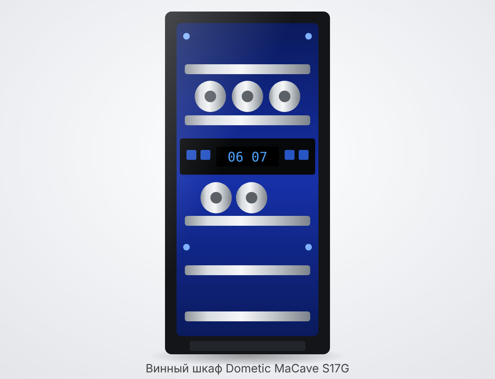
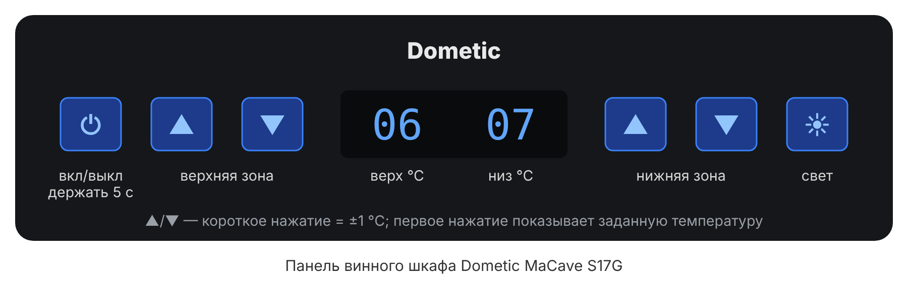
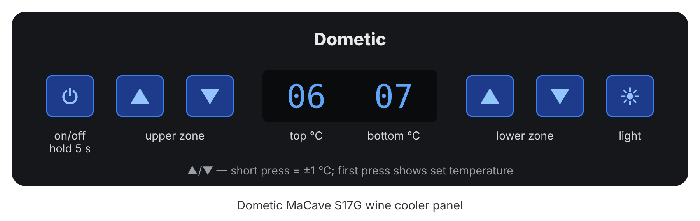
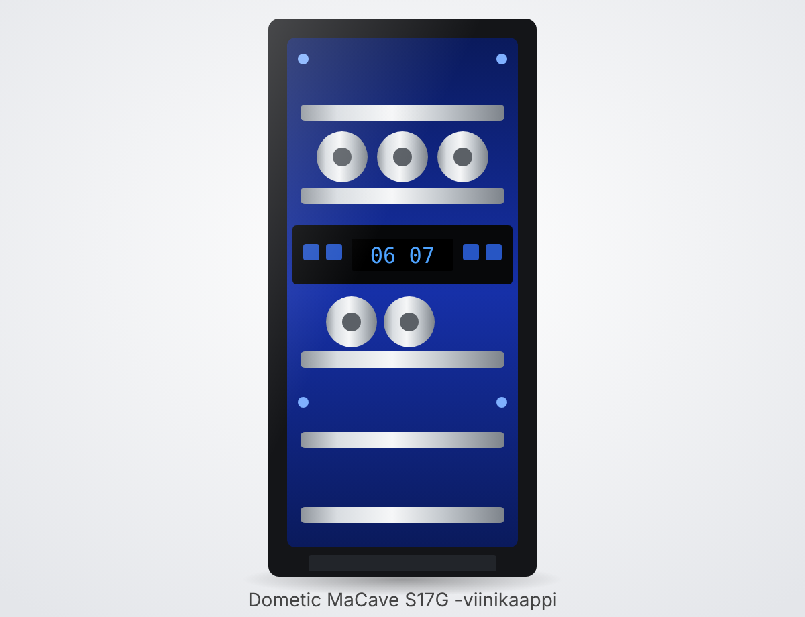
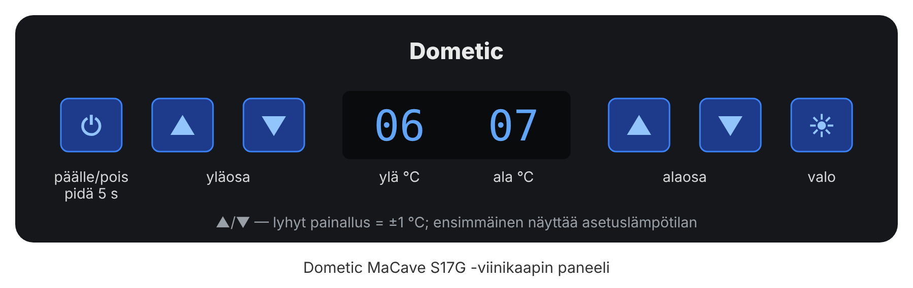

• Вероятнее всего Dometic MaCave S17G (артикул 9103540066; в Австралии продавался как Dometic S17G): 17 бутылок, 2 зоны, стеклянная дверь, ширина 295 мм. • Табличку с типом не нашли — модель определена визуально: ширина ~30 см, 17 бутылок, две зоны, синяя LED-подсветка, панель между зонами. • Порядок кнопок на панели совпадает с рисунком 3 инструкции S17G один в один: ⏻, ▲/▼ верхней зоны, два дисплея, ▲/▼ нижней зоны, ☀. • Схема 2-V20140113 (2014 г.) с нагревателем и 3 вентиляторами подходит: у S17G две зоны, вентиляторы (режим Dynamic Cooling) и, по описанию продавцов, режим компенсации температуры зимой (подогрев). • Та же инструкция описывает и родственные модели: S46G (46 бутылок, 595 мм), S118G, ST198D (двухзонные, 595 мм) и S24G (однозонный). При ширине 30 см из этой серии подходит только S17G. • Другие 30-сантиметровые двухзонные Dometic 2014–2018 гг. мне не попались. У Dometic есть и более старый MaCave S16FG, но его параметры я не проверял. • Точную модель и электрические данные можно взять с наклейки на задней стенке или внутри камеры (если она сохранилась).
• ⏻ (кнопка 1) — включение/выключение: удерживать дольше 5 секунд. • ▲ верхней зоны (2) — короткое нажатие (<1 с) поднимает заданную температуру верхней зоны на 1 °C/°F. • ▼ верхней зоны (3) — короткое нажатие опускает температуру верхней зоны на 1 °C/°F. • Левый дисплей (4) — текущая температура верхней зоны; правый дисплей (5) — нижней зоны. • ▲ нижней зоны (6) / ▼ нижней зоны (7) — то же для нижней зоны, шаг 1 °C/°F. • Первое нажатие ▲ или ▼ показывает заданную температуру примерно на 5 секунд (дисплей мигает), следующие нажатия её меняют. Затем дисплей снова показывает фактическую температуру. • ☀ (8) — короткое нажатие включает или выключает подсветку. • Подсветка работает в двух режимах: «Стандарт» (горит при открытой двери) и «Витрина» (горит постоянно). Переключаются коротким нажатием (по инструкции). • °C/°F: по инструкции нужно удерживать кнопку 5 секунд. В доступной копии символ кнопки потерян, поэтому какая именно кнопка — неизвестно; см. рис. 3 печатной инструкции. Не путайте с ⏻: долгое нажатие на неё выключит шкаф. • Вентилятор: долгое (>5 с) удержание кнопки переключает режимы Dynamic Cooling (5 сигналов, вентилятор работает; по умолчанию) и Silent (3 сигнала, вентилятор выключен). Какая кнопка, в доступном тексте тоже не указано. • Режим «Шаббат»: две кнопки одновременно ≥5 с, дисплей мигнёт 4 раза. Дисплей, свет и сигнализация отключаются, охлаждение работает. Через 96 часов режим выключается сам. • Блокировка панели (автоматически через 2 минуты, снятие — две кнопки ≥5 с) по инструкции есть только у S118G и ST198D. У S17G её нет. Сама дверь, по описанию продавцов, запирается на замок. • Тревога: шкаф пищит и мигает дисплей, если температура в зоне отклонилась больше чем на 5 °C, после долгого отключения питания, если дверь не закрыта или открыта дольше 60 секунд. Звук снимается коротким нажатием. • Заданные температуры сохраняются после отключения питания.
• Обе зоны регулируются в диапазоне +5…+22 °C (41–72 °F). • Верхняя зона: +5…+13 °C — игристое, шампанское, белое. • Нижняя зона: +13…+22 °C — красное и белое. • В нижней зоне должно быть так же или теплее, чем в верхней. Лучше всего шкаф работает при разнице между зонами не меньше 4 °C. • Окружающая температура: класс ST, от +16 до +38 °C. • После первого включения или долгого простоя температура какое-то время отличается от заданной, пока не установится.
• Выберите самое прохладное место вдали от источников тепла, сухое и без прямого солнца. Пол должен быть ровным и выдерживать загруженный шкаф. • После перевозки поставьте шкаф вертикально примерно на 2 часа и только потом включайте. • Вентиляционные прорези спереди (внизу) ничем не закрывайте. • Ниша для встраивания: ширина 300 мм, глубина не меньше 575 мм, высота 822–892 мм. • При встраивании тёплый воздух должен уходить через вентиляционный канал сзади сечением не меньше 200 см². С цоколем вентиляционные отверстия в нём — в сумме не меньше 300 см². • Выравнивание — регулируемыми ножками. Если шкаф стоит криво, он вибрирует и дверь плохо закрывается. • Подключение: 220–240 В, 50 Гц. Без удлинителей и колодок с выключателем. Кабель закрепить за шкафом. • Навес двери можно перевесить на другую сторону (рисунки в инструкции).
• Вместимость — 17 стандартных бутылок «Бордо» 0,75 л. • Храните только закрытые бутылки и не перегружайте шкаф. • Не накрывайте полки фольгой и не загораживайте их — мешает циркуляции воздуха. • Полки выдвигаются примерно на треть, дальше их держит стопор. Перед выдвижением полностью откройте дверь. • Чтобы снять полку, совместите её выемки с пластиковыми выступами и выньте. • Укладывать бутылки в штабель можно только на усиленные полки (продаются отдельно). Варианты раскладки — на рисунках инструкции. • Допустимой нагрузки на полку в кг инструкция не указывает.
• Журчание или бульканье в конце цикла — это нормально, так течёт хладагент. • Щелчки и потрескивания — внутренние стенки сжимаются и расширяются от перепадов температуры, это тоже нормально. • Оттайка автоматическая. • Влажность: на верхней полке стоит ёмкость для воды. Наливайте её примерно на ¾ и регулярно проверяйте уровень. • Угольный фильтр меняйте раз в год: повернуть на 90° и вынуть, новый вставить и повернуть до щелчка. • Если шкаф долго стоит пустым, оставьте дверь приоткрытой, иначе появятся конденсат, плесень или запах. • После отключения питания или выключения подождите 3–5 минут и только потом включайте снова. • Экономия: реже открывайте дверь, не держите её открытой и регулярно очищайте конденсатор от пыли.
• Перед чисткой отключите шкаф от сети. Полки при необходимости выньте. • Внутреннюю камеру мойте тёплой водой с содой (около 2 ст. ложек на 0,5 л воды). • Полки мойте мягким мыльным раствором. Панель управления протирайте слегка влажной тряпкой. • Снаружи: тёплая вода с мягким моющим средством, потом сполосните чистой водой и вытрите насухо. • Не мойте под проточной водой и в посудомойке. Не используйте абразивы и твёрдые предметы. • Следите, чтобы вентиляционные отверстия были чистыми. • Уплотнитель двери держите чистым: из-за грязного уплотнителя дверь плохо закрывается.
• Если уезжаете меньше чем на 3 недели, шкаф можно оставить включённым. • Если на несколько месяцев: выньте всё, выключите (⏻ >5 с), отключите от сети, вымойте и высушите, дверь оставьте приоткрытой. • Перевозка: шкаф пустой, полки и дверь закреплены скотчем, ножки вкручены. Везти вертикально, обернув одеялом.
• Не работает → проверьте вилку, включите кнопкой ⏻ (>5 с), проверьте автомат или предохранитель. • Плохо охлаждает → проверьте настройку, реже открывайте дверь, плотно закрывайте. Проверьте, очистите или замените уплотнитель. Переставьте шкаф в место прохладнее. • Часто включается и выключается → в помещении жарко, недавно загрузили много бутылок или плохо закрыта дверь. Дайте шкафу выйти на режим, проверьте дверь. • Не горит свет → проверьте питание и автомат, включите свет кнопкой ☀. • Вибрирует или шумит → выровняйте ножками. • Дверь плохо закрывается → выровняйте шкаф, проверьте петли (если навес меняли), очистите уплотнитель, правильно вставьте полки. • Пищит и мигает дисплей → сработала температурная тревога (дверь, отключение питания, отклонение >5 °C). Устраните причину; звук снимается коротким нажатием. • На дисплее E1, E2 или E7 → неисправен датчик температуры воздуха внутри. Нужен авторизованный сервис.
• Модель: Dometic MaCave S17G, арт. 9103540066, EAN 4015704217506. • Вместимость: 17 бутылок «Бордо», 2 зоны. Объём нетто 48 л (по данным продавца). • Температура: +5…+22 °C в каждой зоне. • Габариты (Ш×Г×В, с ручкой): 295×615×820 мм. Вес: 29 кг. • Питание: 220–240 В ~, 50 Гц, 80 Вт. • Хладагент: R600a, 18 г. Компрессорное охлаждение. • Энергопотребление: 138 кВт·ч/год, класс A (по старой шкале). • Шум: 45 дБА по инструкции, 43 дБ(А) на сайте Dometic. • Климатический класс: ST (+16…+38 °C). Категория 2. • Ниша: 300 мм × мин. 575 мм × 822–892 мм. • Комплектация и опции: стеклянная дверь с замком (по данным продавца), синяя LED-подсветка, угольный фильтр, ёмкость для влаги; усиленные полки — аксессуар.

• Most likely a Dometic MaCave S17G (item no. 9103540066; sold in Australia as the Dometic S17G): 17 bottles, 2 zones, glass door, width 295 mm. • The rating plate was not found — the model was identified visually: width ~30 cm, 17 bottles, two zones, blue LED lighting, control panel between the zones. • The button order on the panel matches figure 3 of the S17G manual exactly: ⏻, upper-zone ▲/▼, two displays, lower-zone ▲/▼, ☀. • Wiring diagram 2-V20140113 (2014) with a heater and 3 fans fits: the S17G has two zones, fans (Dynamic Cooling mode) and, according to retailers, a winter temperature compensation mode (heating). • The same manual also covers related models: S46G (46 bottles, 595 mm), S118G, ST198D (dual-zone, 595 mm) and S24G (single-zone). With a width of 30 cm, only the S17G in this series fits. • I did not come across any other 30 cm dual-zone Dometic models from 2014–2018. Dometic also has the older MaCave S16FG, but I have not checked its specifications. • The exact model and electrical data can be taken from the sticker on the back wall or inside the cabinet (if it is still there).
• ⏻ (button 1) — on/off: hold for more than 5 seconds. • Upper-zone ▲ (2) — a short press (<1 s) raises the set temperature of the upper zone by 1 °C/°F. • Upper-zone ▼ (3) — a short press lowers the upper-zone temperature by 1 °C/°F. • Left display (4) — current temperature of the upper zone; right display (5) — of the lower zone. • Lower-zone ▲ (6) / lower-zone ▼ (7) — the same for the lower zone, in steps of 1 °C/°F. • The first press of ▲ or ▼ shows the set temperature for about 5 seconds (the display flashes); further presses change it. The display then goes back to showing the actual temperature. • ☀ (8) — a short press turns the lighting on or off. • The lighting has two modes: “Standard” (on while the door is open) and “Showcase” (on all the time). You switch between them with a short press (according to the manual). • °C/°F: according to the manual, hold the button for 5 seconds. The button symbol is missing in the available copy, so it is not known which button it is; see fig. 3 of the printed manual. Do not confuse it with ⏻: a long press on that one switches the cabinet off. • Fan: a long (>5 s) press of a button switches between Dynamic Cooling (5 beeps, fan running; default) and Silent (3 beeps, fan off). Which button is also not stated in the available text. • Sabbath mode: two buttons together for ≥5 s, the display flashes 4 times. The display, light and alarm are switched off; cooling keeps running. The mode turns itself off after 96 hours. • Panel lock (automatic after 2 minutes, unlocked with two buttons for ≥5 s) exists, according to the manual, only on the S118G and ST198D. The S17G does not have it. The door itself, according to retailers, has a lock. • Alarm: the cabinet beeps and the display flashes if the temperature in a zone has deviated by more than 5 °C, after a long power cut, or if the door is not closed or has been open for longer than 60 seconds. The sound is silenced with a short press. • Set temperatures are kept after a power cut.
• Both zones are adjustable in the range +5…+22 °C (41–72 °F). • Upper zone: +5…+13 °C — sparkling wine, champagne, white. • Lower zone: +13…+22 °C — red and white. • The lower zone must be the same temperature as or warmer than the upper zone. The cabinet works best with a difference of at least 4 °C between the zones. • Ambient temperature: class ST, from +16 to +38 °C. • After first switch-on or a long period out of use, the temperature differs from the set value for a while until it stabilises.
• Choose the coolest spot away from heat sources, dry and out of direct sunlight. The floor must be level and able to carry the loaded cabinet. • After transport, stand the cabinet upright for about 2 hours before switching it on. • Do not cover the ventilation slots at the front (bottom). • Built-in niche: width 300 mm, depth at least 575 mm, height 822–892 mm. • When built in, warm air must escape through a ventilation duct at the back with a cross-section of at least 200 cm². With a plinth, the ventilation openings in it must total at least 300 cm². • Level the cabinet with the adjustable feet. If the cabinet is not level, it vibrates and the door does not close properly. • Connection: 220–240 V, 50 Hz. No extension cords or power strips with a switch. Secure the cable behind the cabinet. • The door can be rehung to open on the other side (figures in the manual).
• Capacity — 17 standard 0.75 l “Bordeaux” bottles. • Store only closed bottles and do not overload the cabinet. • Do not cover the shelves with foil or block them — this hinders air circulation. • The shelves pull out about one third of the way; beyond that a stopper holds them. Open the door fully before pulling out a shelf. • To remove a shelf, line up its notches with the plastic lugs and lift it out. • Bottles may be stacked only on reinforced shelves (sold separately). Loading layouts are shown in the manual’s figures. • The manual does not state the permitted load per shelf in kg.
• Gurgling or bubbling at the end of a cycle is normal — it is the refrigerant flowing. • Clicks and crackling — the inner walls contract and expand with temperature changes; this is also normal. • Defrosting is automatic. • Humidity: there is a water container on the top shelf. Fill it about ¾ full and check the level regularly. • Replace the charcoal filter once a year: turn it 90° and pull it out, insert the new one and turn until it clicks. • If the cabinet stands empty for a long time, leave the door ajar, otherwise condensation, mould or odour will appear. • After a power cut or switching off, wait 3–5 minutes before switching it on again. • Saving energy: open the door less often, do not keep it open and clean the dust off the condenser regularly.
• Unplug the cabinet before cleaning. Remove the shelves if necessary. • Wash the interior with warm water and baking soda (about 2 tablespoons per 0.5 l of water). • Wash the shelves with a mild soapy solution. Wipe the control panel with a slightly damp cloth. • Outside: warm water with a mild detergent, then rinse with clean water and wipe dry. • Do not wash under running water or in the dishwasher. Do not use abrasives or hard objects. • Keep the ventilation openings clean. • Keep the door seal clean: a dirty seal stops the door from closing properly.
• If you are away for less than 3 weeks, the cabinet can be left on. • If for several months: take everything out, switch off (⏻ >5 s), unplug, wash and dry, leave the door ajar. • Transport: cabinet empty, shelves and door secured with tape, feet screwed in. Transport upright, wrapped in a blanket.
• Does not work → check the plug, switch on with the ⏻ button (>5 s), check the circuit breaker or fuse. • Poor cooling → check the setting, open the door less often, close it firmly. Check, clean or replace the door seal. Move the cabinet to a cooler spot. • Switches on and off frequently → the room is hot, many bottles were loaded recently or the door is not closed properly. Let the cabinet reach its operating temperature, check the door. • Light does not come on → check the power and circuit breaker, switch the light on with the ☀ button. • Vibrates or is noisy → level it with the feet. • Door does not close properly → level the cabinet, check the hinges (if the door was rehung), clean the seal, insert the shelves correctly. • Beeps and the display flashes → a temperature alarm has gone off (door, power cut, deviation >5 °C). Remove the cause; the sound is silenced with a short press. • E1, E2 or E7 on the display → the internal air temperature sensor is faulty. An authorised service centre is needed.
• Model: Dometic MaCave S17G, item no. 9103540066, EAN 4015704217506. • Capacity: 17 “Bordeaux” bottles, 2 zones. Net volume 48 l (according to the retailer). • Temperature: +5…+22 °C in each zone. • Dimensions (W×D×H, with handle): 295×615×820 mm. Weight: 29 kg. • Power supply: 220–240 V ~, 50 Hz, 80 W. • Refrigerant: R600a, 18 g. Compressor cooling. • Energy consumption: 138 kWh/year, class A (old scale). • Noise: 45 dBA according to the manual, 43 dB(A) on the Dometic website. • Climate class: ST (+16…+38 °C). Category 2. • Niche: 300 mm × min. 575 mm × 822–892 mm. • Equipment and options: lockable glass door (according to the retailer), blue LED lighting, charcoal filter, humidity container; reinforced shelves — accessory.


• Todennäköisimmin Dometic MaCave S17G (tuotenumero 9103540066; Australiassa myytiin nimellä Dometic S17G): 17 pulloa, 2 vyöhykettä, lasiovi, leveys 295 mm. • Arvokilpeä ei löytynyt — malli tunnistettiin ulkonäön perusteella: leveys n. 30 cm, 17 pulloa, kaksi vyöhykettä, sininen LED-valaistus, ohjauspaneeli vyöhykkeiden välissä. • Paneelin painikkeiden järjestys vastaa täsmälleen S17G:n käyttöohjeen kuvaa 3: ⏻, ylävyöhykkeen ▲/▼, kaksi näyttöä, alavyöhykkeen ▲/▼, ☀. • Kytkentäkaavio 2-V20140113 (vuodelta 2014), jossa on lämmitin ja 3 puhallinta, sopii: S17G:ssä on kaksi vyöhykettä, puhaltimet (Dynamic Cooling -tila) ja myyjien kuvausten mukaan talven lämpötilakompensointitila (lämmitys). • Sama ohje kattaa myös sukulaismallit: S46G (46 pulloa, 595 mm), S118G, ST198D (kaksivyöhykkeiset, 595 mm) ja S24G (yksivyöhykkeinen). 30 cm:n leveydellä sarjasta sopii vain S17G. • Muita 30-senttisiä kaksivyöhykkeisiä Dometic-malleja vuosilta 2014–2018 en löytänyt. Dometicilla on myös vanhempi MaCave S16FG, mutta sen tietoja en ole tarkistanut. • Tarkan mallin ja sähkötiedot saa takaseinän tai kaapin sisällä olevasta tarrasta (jos se on tallella).
• ⏻ (painike 1) — virta päälle/pois: pidä painettuna yli 5 sekuntia. • Ylävyöhykkeen ▲ (2) — lyhyt painallus (<1 s) nostaa ylävyöhykkeen asetuslämpötilaa 1 °C/°F. • Ylävyöhykkeen ▼ (3) — lyhyt painallus laskee ylävyöhykkeen lämpötilaa 1 °C/°F. • Vasen näyttö (4) — ylävyöhykkeen nykyinen lämpötila; oikea näyttö (5) — alavyöhykkeen. • Alavyöhykkeen ▲ (6) / alavyöhykkeen ▼ (7) — sama alavyöhykkeelle, 1 °C/°F:n askelin. • Ensimmäinen ▲- tai ▼-painallus näyttää asetuslämpötilan noin 5 sekunnin ajan (näyttö vilkkuu), seuraavat painallukset muuttavat sitä. Sen jälkeen näyttö näyttää taas todellisen lämpötilan. • ☀ (8) — lyhyt painallus sytyttää tai sammuttaa valaistuksen. • Valaistuksessa on kaksi tilaa: ”Vakio” (palaa oven ollessa auki) ja ”Vitriini” (palaa jatkuvasti). Tilaa vaihdetaan lyhyellä painalluksella (ohjeen mukaan). • °C/°F: ohjeen mukaan painiketta pidetään painettuna 5 sekuntia. Saatavilla olevasta kopiosta painikkeen symboli puuttuu, joten ei tiedetä, mikä painike on kyseessä; katso painetun ohjeen kuva 3. Älä sekoita ⏻-painikkeeseen: sen pitkä painallus sammuttaa kaapin. • Puhallin: painikkeen pitkä (>5 s) painallus vaihtaa tilojen Dynamic Cooling (5 merkkiääntä, puhallin käy; oletus) ja Silent (3 merkkiääntä, puhallin pois) välillä. Mikä painike, ei myöskään käy ilmi saatavilla olevasta tekstistä. • Sapattitila: kaksi painiketta yhtä aikaa ≥5 s, näyttö vilkkuu 4 kertaa. Näyttö, valo ja hälytys kytkeytyvät pois, jäähdytys toimii. Tila kytkeytyy itsestään pois 96 tunnin kuluttua. • Paneelin lukitus (automaattisesti 2 minuutin kuluttua, avaus kahdella painikkeella ≥5 s) on ohjeen mukaan vain malleissa S118G ja ST198D. S17G:ssä sitä ei ole. Itse ovi on myyjien kuvauksen mukaan lukittava. • Hälytys: kaappi piippaa ja näyttö vilkkuu, jos vyöhykkeen lämpötila on poikennut yli 5 °C, pitkän sähkökatkon jälkeen tai jos ovi ei ole kiinni tai on ollut auki yli 60 sekuntia. Äänen saa pois lyhyellä painalluksella. • Asetetut lämpötilat säilyvät sähkökatkon jälkeen.
• Molemmat vyöhykkeet ovat säädettävissä välillä +5…+22 °C (41–72 °F). • Ylävyöhyke: +5…+13 °C — kuohuviinit, samppanja, valkoviini. • Alavyöhyke: +13…+22 °C — puna- ja valkoviini. • Alavyöhykkeen on oltava yhtä lämmin tai lämpimämpi kuin ylävyöhykkeen. Kaappi toimii parhaiten, kun vyöhykkeiden lämpötilaero on vähintään 4 °C. • Ympäristön lämpötila: luokka ST, +16…+38 °C. • Ensimmäisen käynnistyksen tai pitkän käyttötauon jälkeen lämpötila poikkeaa asetetusta jonkin aikaa, kunnes se tasaantuu.
• Valitse viilein paikka kaukana lämmönlähteistä, kuiva ja suoralta auringonvalolta suojattu. Lattian on oltava tasainen ja kestettävä täytetyn kaapin paino. • Kuljetuksen jälkeen anna kaapin seistä pystyasennossa noin 2 tuntia ennen kuin kytket sen päälle. • Älä peitä edessä (alhaalla) olevia tuuletusaukkoja. • Kalustesyvennys: leveys 300 mm, syvyys vähintään 575 mm, korkeus 822–892 mm. • Kalusteeseen asennettaessa lämpimän ilman on päästävä poistumaan takana olevan tuuletuskanavan kautta, jonka poikkipinta-ala on vähintään 200 cm². Jos kaapissa on sokkeli, sen tuuletusaukkojen yhteispinta-alan on oltava vähintään 300 cm². • Tasaa kaappi säädettävillä jaloilla. Jos kaappi on vinossa, se tärisee eikä ovi sulkeudu kunnolla. • Liitäntä: 220–240 V, 50 Hz. Ei jatkojohtoja eikä kytkimellisiä jatkopistorasioita. Kiinnitä johto kaapin taakse. • Oven saranoinnin voi vaihtaa toiselle puolelle (kuvat ohjeessa).
• Tilavuus — 17 tavallista 0,75 l:n ”Bordeaux”-pulloa. • Säilytä vain suljettuja pulloja äläkä ylikuormita kaappia. • Älä peitä hyllyjä foliolla tai tukki niitä — se haittaa ilmankiertoa. • Hyllyt voi vetää ulos noin kolmanneksen verran, sen jälkeen pysäytin pitää ne paikallaan. Avaa ovi kokonaan ennen hyllyn vetämistä ulos. • Irrota hylly kohdistamalla sen lovet muovinokkiin ja nostamalla se pois. • Pulloja saa pinota vain vahvistetuille hyllyille (myydään erikseen). Sijoitusvaihtoehdot näkyvät ohjeen kuvissa. • Ohje ei kerro hyllyn suurinta sallittua kuormaa kilogrammoina.
• Lorina tai pulputus jakson lopussa on normaalia — se on kylmäaineen virtausta. • Napsahdukset ja ritinä — sisäseinät supistuvat ja laajenevat lämpötilan vaihdellessa, tämäkin on normaalia. • Sulatus on automaattinen. • Kosteus: ylimmällä hyllyllä on vesiastia. Täytä se noin ¾:aan ja tarkista vedenpinta säännöllisesti. • Vaihda hiilisuodatin kerran vuodessa: käännä 90° ja vedä ulos, aseta uusi paikalleen ja käännä, kunnes se napsahtaa. • Jos kaappi on pitkään tyhjänä, jätä ovi raolleen, muuten kaappiin tulee kosteutta, hometta tai hajua. • Sähkökatkon tai virran katkaisun jälkeen odota 3–5 minuuttia ennen kuin kytket kaapin uudelleen päälle. • Energiansäästö: avaa ovea harvemmin, älä pidä sitä auki ja puhdista lauhdutin pölystä säännöllisesti.
• Irrota kaappi sähköverkosta ennen puhdistusta. Poista hyllyt tarvittaessa. • Pese sisätila lämpimällä vedellä ja ruokasoodalla (noin 2 rkl 0,5 litraan vettä). • Pese hyllyt miedolla saippualiuoksella. Pyyhi ohjauspaneeli kevyesti kostealla liinalla. • Ulkopuoli: lämmintä vettä ja mietoa pesuainetta, huuhtele sen jälkeen puhtaalla vedellä ja kuivaa. • Älä pese juoksevan veden alla äläkä astianpesukoneessa. Älä käytä hankaavia aineita tai kovia esineitä. • Pidä tuuletusaukot puhtaina. • Pidä oven tiiviste puhtaana: likainen tiiviste estää oven kunnollisen sulkeutumisen.
• Jos olet poissa alle 3 viikkoa, kaapin voi jättää päälle. • Jos useita kuukausia: tyhjennä kaappi, sammuta se (⏻ >5 s), irrota pistoke, pese ja kuivaa, jätä ovi raolleen. • Kuljetus: kaappi tyhjänä, hyllyt ja ovi teipattu kiinni, jalat kierretty sisään. Kuljeta pystyasennossa peittoon käärittynä.
• Ei toimi → tarkista pistoke, kytke päälle ⏻-painikkeella (>5 s), tarkista sulake tai johdonsuojakatkaisin. • Jäähdyttää huonosti → tarkista asetus, avaa ovea harvemmin, sulje se tiiviisti. Tarkista, puhdista tai vaihda tiiviste. Siirrä kaappi viileämpään paikkaan. • Käynnistyy ja sammuu usein → huoneessa on kuuma, kaappiin on äskettäin laitettu paljon pulloja tai ovi on huonosti kiinni. Anna kaapin saavuttaa käyttölämpötila, tarkista ovi. • Valo ei pala → tarkista virransyöttö ja sulake, sytytä valo ☀-painikkeella. • Tärisee tai pitää ääntä → tasaa jaloilla. • Ovi ei sulkeudu kunnolla → tasaa kaappi, tarkista saranat (jos saranointia on vaihdettu), puhdista tiiviste, aseta hyllyt oikein paikoilleen. • Piippaa ja näyttö vilkkuu → lämpötilahälytys on lauennut (ovi, sähkökatko, poikkeama >5 °C). Poista syy; äänen saa pois lyhyellä painalluksella. • Näytössä E1, E2 tai E7 → sisäilman lämpötila-anturi on viallinen. Tarvitaan valtuutettu huolto.
• Malli: Dometic MaCave S17G, tuotenro 9103540066, EAN 4015704217506. • Tilavuus: 17 ”Bordeaux”-pulloa, 2 vyöhykettä. Nettotilavuus 48 l (myyjän tietojen mukaan). • Lämpötila: +5…+22 °C kummassakin vyöhykkeessä. • Mitat (L×S×K, kahvan kanssa): 295×615×820 mm. Paino: 29 kg. • Virransyöttö: 220–240 V ~, 50 Hz, 80 W. • Kylmäaine: R600a, 18 g. Kompressorijäähdytys. • Energiankulutus: 138 kWh/vuosi, luokka A (vanhan asteikon mukaan). • Melu: 45 dBA ohjeen mukaan, 43 dB(A) Dometicin verkkosivuilla. • Ilmastoluokka: ST (+16…+38 °C). Luokka 2. • Kalustesyvennys: 300 mm × väh. 575 mm × 822–892 mm. • Varustus ja lisävarusteet: lukittava lasiovi (myyjän tietojen mukaan), sininen LED-valaistus, hiilisuodatin, kosteusastia; vahvistetut hyllyt — lisävaruste.